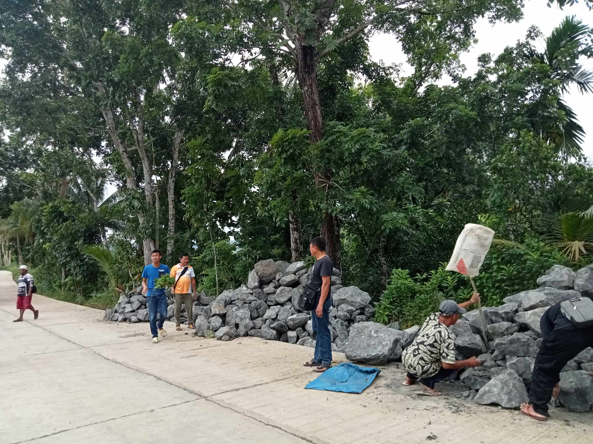
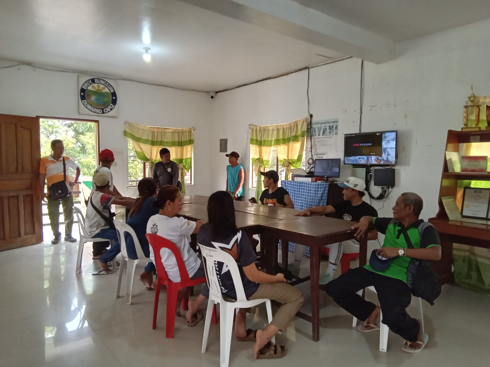
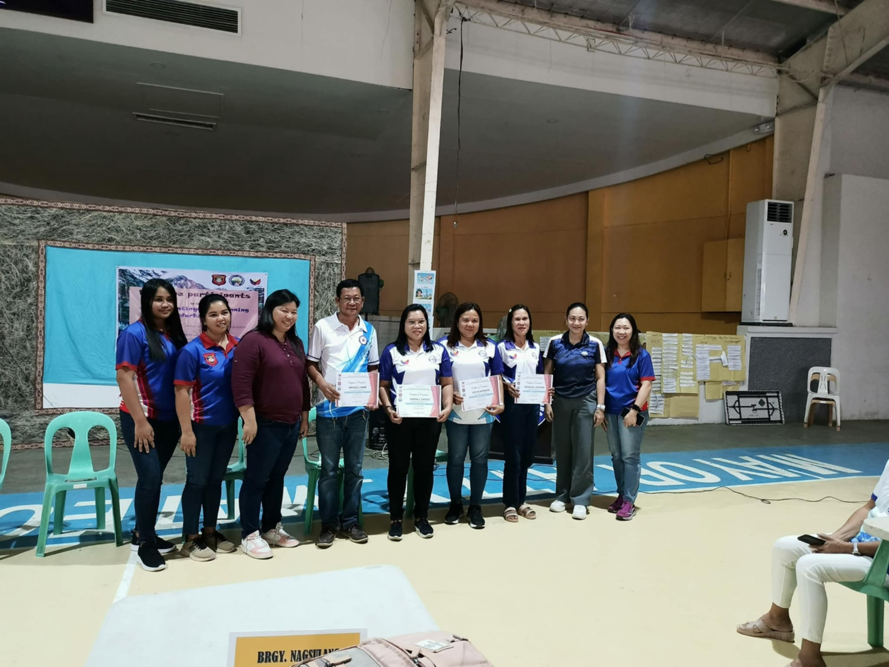

April 13, 2026
Environment
Keeping Our Roads Clear and Safe
Ensuring smooth travels for every Bungsuanon! Our dedicated team, headed by Punong Barangay Nicolas S. Hare along with the Sangguniang Barangay, SK, and our hardworking Tanods, hit the streets for a massive Road Clearing Operation. By removing obstructions, we're making our community safer and more accessible for everyone.

April 12, 2026
Public Safety
Duck, Cover, and Hold: Earthquake Drill 2026
Preparedness is our best defense! The Bungsuan Barangay Hall turned into a training ground as we conducted a simultaneous earthquake drill. Led by Punong Barangay Nick Hare and BDRRM Chair Sunday Rabin, the team practiced life-saving maneuvers to ensure that when the ground shakes, Bungsuan stands firm and ready.

April 11, 2026
Governance
Planning for a Resilient Future
Action meets strategy! The Barangay Bungsuan Council recently completed an intensive 3-day Contingency Planning Workshop at the Dumarao Sports Complex. Our leaders worked tirelessly to craft robust response plans for any situation, ensuring that the heart of Dumarao remains resilient, organized, and always one step ahead.

Want more updates?
For the latest announcements and more photos of our community activities, follow our official Facebook page.
Follow us on Facebook